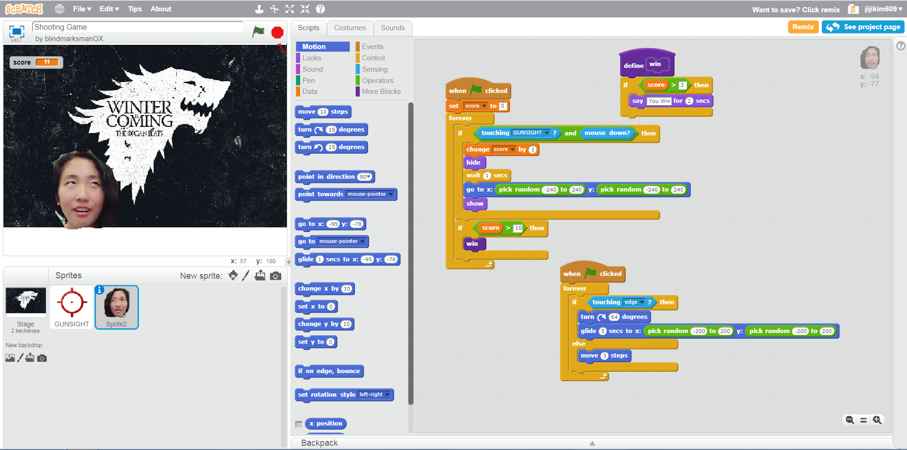
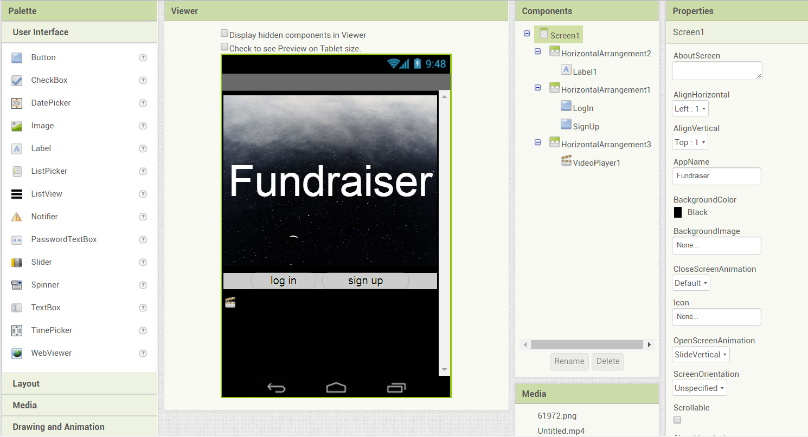
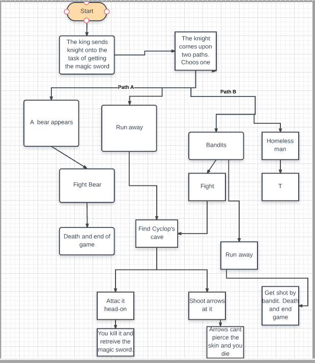
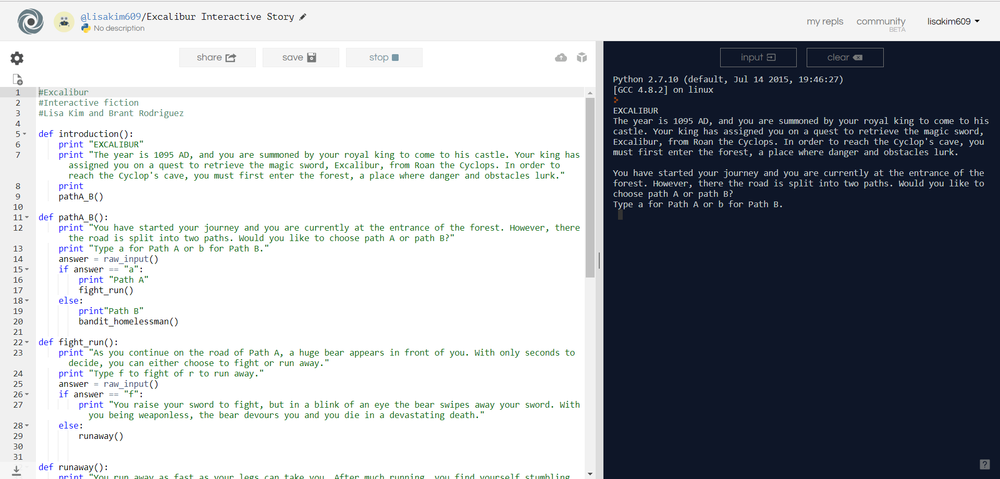

Portfolio
On this page, you will see projects I have done for AP Computer Science Principles
Using scratch, my partner and I design a game of Hide and Seek using Grace's face. We used commands to have Grace's face sing a song and change faces when clicked.

In our next project, my partner, Grace, and I created a shooting game. In the game, the players target Grace's face using the gunsight and shoot with the mouse.

My partner and I created an app which allows the user to organize their business data, such as profit, loss, items sold and bought, etc.

For my next project, my partner and I created an interactive fiction story using python. To begin our planning process, we mapped out our plot story with Lucidchart. Our interactive fiction story is about a knight searching for the sword Excalibur.


In my next project, with my partner Leona, we made image modifications to a white canvas. These are the are 8 changes:
Create a big black canvas.
Randomly add some stars in the canvas.
Resize the sun to an appropriate size.
Put the sun in the upper left corner of the canvas.
Resize the earth to an appropriate size.
Paste the earth to the canvas in an appropriate location.
Resize the moon to an appropriate size.
Paste the resized moon to the canvas in an appropriate location.